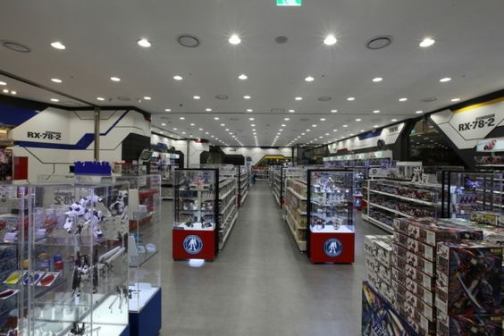

🤖 Gundam 🤖
ประวัติและความสำคัญ
กำเนิดของ Gundam
Gundam เป็นแฟรนไชส์หุ่นยนต์ขนาดยักษ์ที่มีชื่อเสียงระดับโลก ก่อตั้งขึ้นโดย Sunrise บริษัทผลิตอนิเมะญี่ปุ่น โดยซีรีส์แรก "Mobile Suit Gundam" ได้ออกอากาศครั้งแรกในปี 1979 ภายใต้การกำกับของ โยชิยูกิ โทมิโนะ (Yoshiyuki Tomino) เรื่องราวของ Gundam นำเสนอการต่อสู้ระหว่างมนุษย์ที่ใช้หุ่นยนต์ขนาดใหญ่ หรือ "โมบิลสูท" (Mobile Suit) ในสงครามระหว่างโลกและอาณานิคมในอวกาศ
นวัตกรรมและการออกแบบ
สิ่งที่ทำให้ Gundam โดดเด่นคือการออกแบบหุ่นยนต์ที่เรียกว่า "Real Robot" ซึ่งแตกต่างจากแนว "Super Robot" ที่เน้นความเก่งกาจและความสามารถเหนือมนุษย์ Gundam เน้นไปที่ความสมจริงในด้านกลไกและการทำงานของหุ่นยนต์ รวมถึงการพัฒนาตัวละครที่มีมิติเชิงลึก นอกจากนี้ยังมีการสำรวจประเด็นทางการเมือง สังคม และจิตวิทยาในเรื่องราวของซีรีส์
ความสำเร็จและขยายตัวของแฟรนไชส์
หลังจากการออกอากาศครั้งแรก Gundam ได้รับความนิยมอย่างมาก ทำให้เกิดภาคต่อ ภาคแยก และภาพยนตร์มากมาย ทั้งยังมีการผลิตของเล่น โมเดลพลาสติก (Gunpla) หนังสือการ์ตูน (Manga) และวิดีโอเกม แฟรนไชส์ Gundam ได้ขยายตัวไปยังตลาดทั่วโลก และมีแฟนคลับที่หลากหลาย
อิทธิพลในวัฒนธรรมป๊อปคัลเจอร์
Gundam มีอิทธิพลอย่างมากในวัฒนธรรมป๊อปคัลเจอร์ ไม่เพียงแต่ในญี่ปุ่นเท่านั้น แต่ยังทั่วโลก การออกแบบหุ่นยนต์และเรื่องราวของ Gundam ได้สร้างแรงบันดาลใจให้กับนักสร้างสรรค์และศิลปินในหลากหลายสาขา ไม่ว่าจะเป็นอนิเมะ วิดีโอเกม ภาพยนตร์ และนิยายวิทยาศาสตร์ Gundam ยังเป็นตัวแทนของการผสมผสานระหว่างเทคโนโลยีและศิลปะ รวมถึงการสื่อสารประเด็นทางสังคมและการเมืองผ่านการเล่าเรื่อง